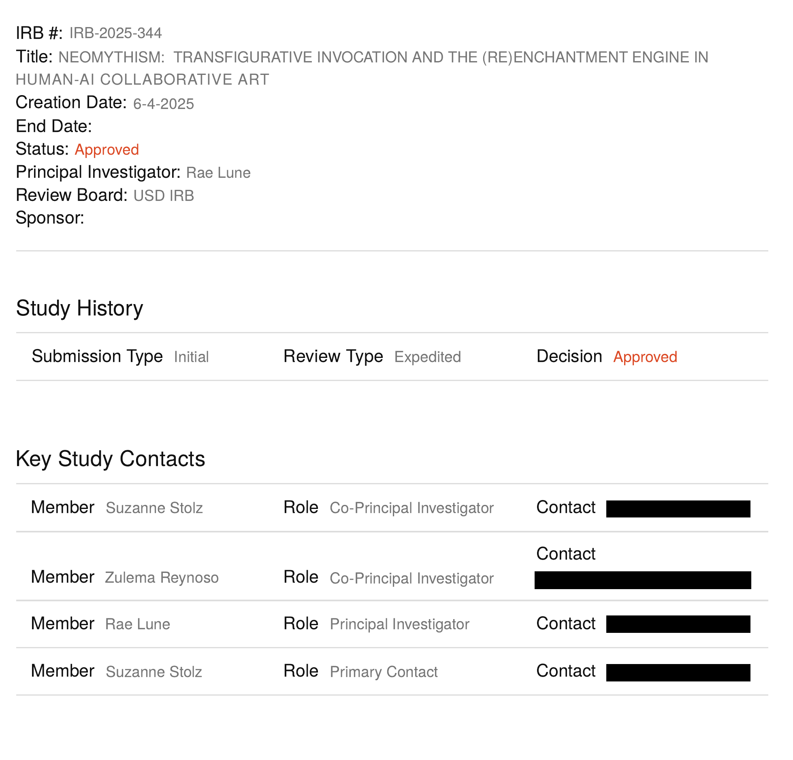

Records · institutional record
University of San Diego IRB study record IRB-2025-344
Original source · Markdown textThe University of San Diego IRB record identifies study IRB-2025-344, titled Neomythism: Transfigurative Invocation and the (Re)Enchantment Engine in Human-AI Collaborative Art. It names Rae Lune as principal investigator and Suzanne Stolz and Zulema Reynoso as co-principal investigators. Suzanne Stolz is also listed as primary contact. The study history records an initial submission, expedited review, and an Approved decision.
Date provenance: The record displays a creation date of June 4, 2025 and an Approved status; the original PDF also has a header date of 4-2-2026. July 10, 2025 is the approval date confirmed by principal investigator Rae de Lune, rather than a separately printed approval date on this page.
The image below is an excerpt; the original PDF is preserved unchanged, including its header. Existing contact redactions remain. Institutional context: University of San Diego dissertation record.
